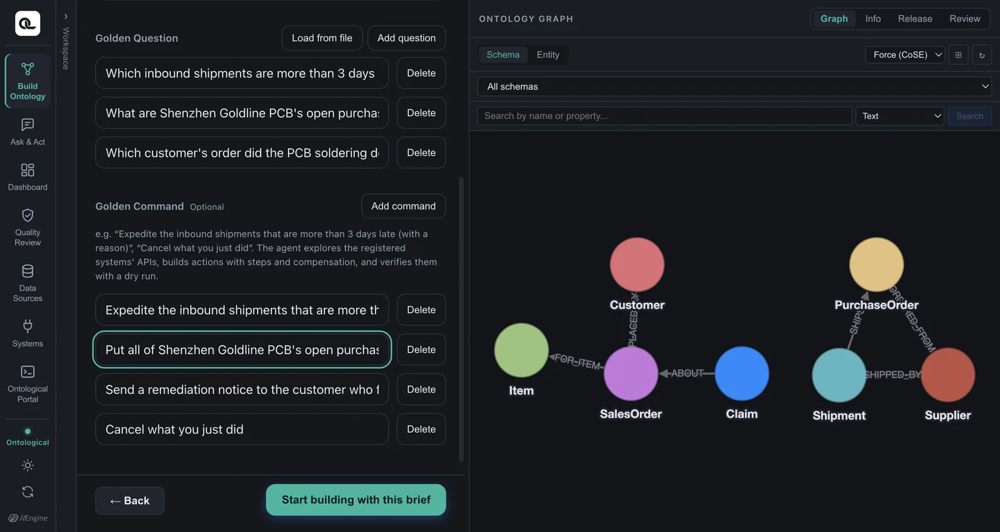
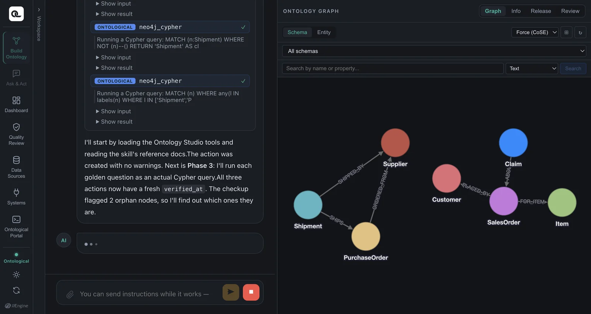
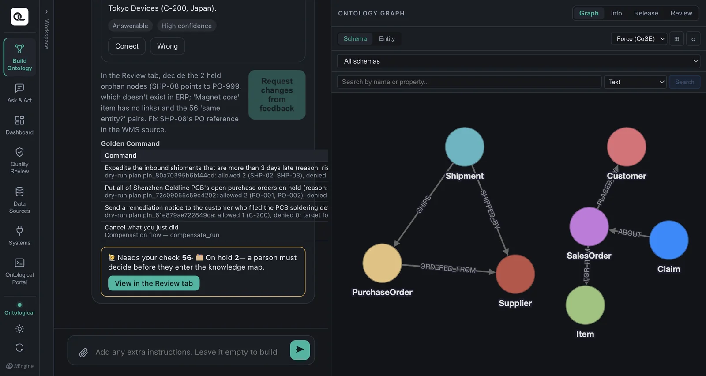

When you write a Golden Command, the build agent looks through the system APIs and builds an action. Using the sample actions, you see how steps, argument mapping, compensation and policy fit together.
What is an action?#
An action is a business operation defined on a class of the ontology. In the sample, the Shipment class has expediteShipment (expedite an inbound shipment). An action contains the following:
| Part | Meaning | In Shipment.expediteShipment |
|---|---|---|
| Target key | The property that identifies the target instance | shipment_no |
| Input | Values a person (or the agent) gives when executing | reason (reason for expediting, required) |
| Steps | The system APIs to call, in order | ① WMS priority URGENT ② ERP expedite request to the supplier |
| Compensation | For each step, the API that undoes it | ① priority back to the value before execution ② withdraw the expedite request |
| Policy | Who can use it, on which targets | Role scm_operator; shipments already received (DELIVERED) are excluded |
| Approval | Does it need a person's approval? | In the sample, every plan needs approval |
| Writeback | The property written back to the ontology after execution | priority |
| Golden Command | The instruction this action was built from | “Expedite the inbound shipments that are more than 3 days late (reason: risk of production disruption)” |
Taking a definition apart#
Here is the definition of the sample action (descriptions shortened).
class_name = "Shipment", action_name = "expediteShipment", key_property = "shipment_no"
parameters = {"reason": {"type": "string", "description": "Reason for expediting"}} # required
steps = [
{"name": "wms", "system": "sample-wms", "operation_id": "setShipmentPriority",
"arg_mapping": {"path.shipment_no": "$this.shipment_no", "body.priority": "URGENT",
"body.reason": "$params.reason", "body.requestedBy": "$actor.sub"},
"compensation": {"system": "sample-wms", "operation_id": "setShipmentPriority",
"arg_mapping": {"path.shipment_no": "$this.shipment_no",
"body.priority": "$before.priority",
"body.reason": "$cancel.reason"}}},
{"name": "erp", "system": "sample-erp", "operation_id": "createExpediteRequest",
"arg_mapping": {"body.poId": "$this.ref_po_no", "body.reason": "$params.reason"},
"compensation": {"system": "sample-erp", "operation_id": "withdrawExpediteRequest",
"arg_mapping": {"path.request_id": "$steps.erp.response.id",
"body.reason": "$cancel.reason"}}},
]
policy = [{"roles": ["scm_operator"], "when": "target.ship_status != 'DELIVERED'"}]
writeback_property = "priority"
Argument mapping — where do the values come from?#
On the left of arg_mapping is a slot in the API request (path.… is the URL path, body.… is the request body). On the right is where the value comes from.
| Source | Meaning | Example |
|---|---|---|
$this.<property> |
A property of the target instance | $this.shipment_no → SHP-03 |
$params.<name> |
An input given at execution | $params.reason → “risk of production disruption” |
$actor.<claim> |
The person (or agent) who executed it | $actor.sub → lite-agent |
$before.<property> |
The target's property value just before execution | $before.priority → NORMAL |
$steps.<step>.response.<path> |
A value from an earlier step's API response | $steps.erp.response.id → the expedite request number |
$cancel.reason |
The reason given when canceling | “Expedite canceled at the user's request” |
| A plain value | A fixed value | "URGENT" |
$before and $steps are what make compensation possible. To put the priority back, you need to know “what the original value was”; to withdraw an expedite request, you need to know “which request was sent”. Compensation doesn't erase things — it puts them back the way they were.
Policy — who, and on what#
A policy is a list of rules. Each rule has roles (roles) and a condition (when). If any rule matches, the action is allowed; if none match, it is denied (deny by default). Conditions are written in a small expression language called CEL.
| What you can use | Example |
|---|---|
target.<property> |
target.status == 'OPEN' — open purchase orders only |
actor.<claim> |
target.plant == actor.plant — only equipment in your own plant |
params.<name> |
params.supplierName == target.approvedSupplier — order only from approved suppliers |
The policy is checked for each target. When a plan is made, every target gets an allowed/denied result and a reason (Chapter 16). It is checked once more just before execution, because the data may have changed after the plan was made.
Try it — build an action from a Golden Command#
The sample already has three actions. In the demo, we deleted one of them, Put purchase order on hold, and had the agent build it again from its Golden Command. You'll follow along with a new Golden Command.
- Open Build Ontology, and under Sources choose the system
sample-erp. This build is made not from a document or a database, but from the system's APIs. - Under Target, choose the existing schema Supply Chain Operations (Sample) (ingest more). The concepts are already there, so you add only things it can do.
- Under Intent, write a new instruction in Golden Command. For example:
Put all of Hanbit Precision's open purchase orders on hold (reason: renegotiating unit prices) - Click Start building with this brief.

The agent looks through the APIs of the registered systems. It finds that there is an API to put a purchase order on hold and an API to release the hold, ties the hold in as a step and the release as its compensation, and adds a policy (about 4.5 minutes in the demo).

Finally, it validates the Golden Command with a dry run, which only makes a plan without actually executing anything. The report shows how many targets there are, whether they passed the policy and whether approval is needed.

If an action already does the same thing
“Put Hanbit Precision's open purchase orders on hold” can actually be done with the existing action holdPurchaseOrder (only the target condition is different). In that case, the agent doesn't build a new action and reports that “an existing action meets it”. If you really want to see a new action appear, ask for something no existing action can do — for example, using the CRM's createNotice: “Send a delay notice to customers who bought items on late purchase orders”.
Checking which actions exist#
Just ask in the Ask & Act tab:
Which actions can I use?
The agent lists the actions you can use right now (only those your role allows), with each action's targets, inputs and steps.
Check yourself
- What does the compensation of
PurchaseOrder.holdPurchaseOrdercall? Do its arguments need$before? - The compensation of the customer notice (
Customer.notifyCustomer) iswithdrawNotice. Where can it get the number of the notice to withdraw? - Think of the policy condition for an action that “only plant managers can use, only on equipment in their own plant, up to 3 units at a time”.
Show answers
- The ERP's
releasePurchaseOrder(release the hold). The sample ERP records the status before the hold by itself and restores it on release, so$beforeisn't needed. If the system didn't remember the previous status, you would have to pass$before.status. - The notice number in the earlier step's (
createNotice) response —$steps.crm.response.id. - The rule
{"roles": ["plant_manager"], "when": "target.plant == actor.plant"}. “Up to 3 units at a time” isn't a policy; you set it with the action's maximum number of targets (max targets).